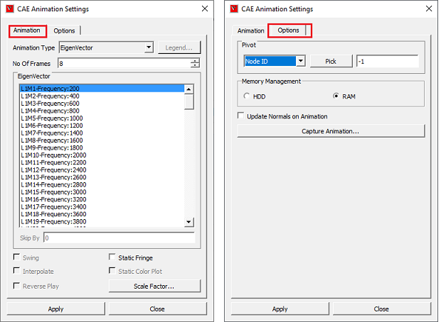
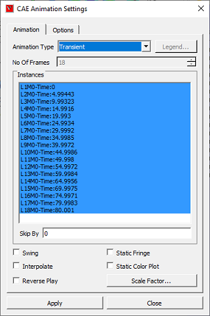
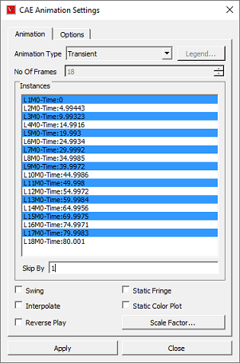
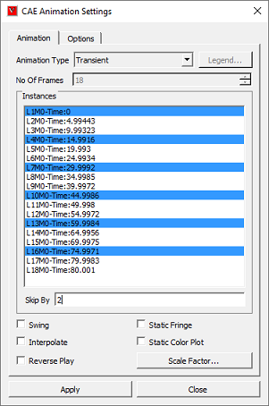
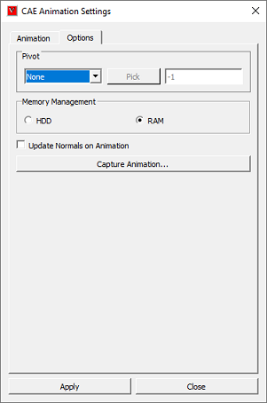
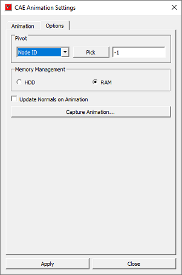
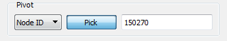
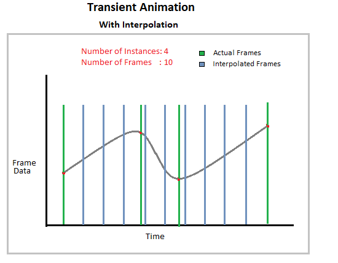
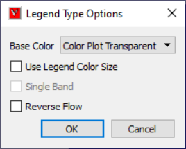

Animation Setup¶
This command allows user to setup the CAE animation.
Animation Settings Panel

Animation Type |
Allows user to choose a type. |
No. Of Frames |
User can change the frames per second. |
Harmonic |
Applies Harmonic motion to Animation. |
Swing |
Applies Swing motion to Animation. |
Static Fringe |
Applies Static Fringe to transient animation. |
Instances/Results |
Allows user to select the instances for animation. |
Skip By |
Allows user to skip number of frames/instances if necessary. |
Interpolate |
Interpolates instance attributes and provides animation based on result instance attributes. |
Static Color Plot |
Enabling this, stops animation of contour. |
Legend |
Legend Animation settings pops up. It is enabled only for Legend Animation type. |
RAM/HDD |
RAM/HDD is used to optimize memory using either RAM or Hard Disk. |
Pivot… |
Allows user to pick a node and simulate deformation relative to this pivot point. |
Track Part |
Allows user to pick a part and track it in case of Rigid body transformations. It is visible only if the model contains regid body transformations. |
Capture Animation |
Allows user to save animation into a movie file. |
Scale Factor |
Link to deformation scale factor settings. |
Apply |
Applies the settings to animation. |
Close |
Closes the panel. |
Types of Animations:
Linear Animation Number of frames provided by user are interpolated linearly between original mesh to deformed mesh.
Transient Animation This is to animate the model with different time steps or frequency or instances. Each frame refers to one time step or load case or mode case or frequency.
Eigenvector Animation Animating eigenvector results (complex eigen as well as mode case data).
Legend Animation Animating contour color based on legend palette using transparency.
CAE Animation
CAE Animation is computing and animating CAE data with finite number of frames. This helps user to understand quickly the result variation.
For example, Let CAE data have 4 frames for animation. Animation of this data is to display frames 1, 2, 3, 4 consecutively. Animation starts with frame 1 and ends with frame 4.
VCollab provides some additional options for better understanding and visualization.
Swing Motion
To display the frames in the order of 1,2,3,4,3,2,1. Animation starts and ends with initial frame.
Harmonic Motion
To compute equivalent mirror frames of all these 4 frames and displaying frames in the order of -4,-3,-2,-1,1,2,3,4. This motion is applicable only for static analysis (i.e., Linear Animation).
Static Fringe
Legend range value varies with each time step frame. Static Fringe refers to a single legend range throughout the animation.
Harmonic with swing motion
To display frames in the order of -4,-3,-2,-1, 1,2,3, 4, 3,2,1,-1,-2,-3,-4. It is applicable only to Linear Animation.
Synchronize
This option is enabled if two or more dataset exist. This synchronizes similar animation types of all datasets.
Capture Animation
This option helps user to save one complete cycle of animation either into a movie or a set of user specified image formats.
Scale Factor
This option is a link to CAE Scale factor settings dialog.
RAM / HDD
User has two option to store animation frame data either into RAM and HDD.
RAM - This option provides an improved performance during animation. If the CAE data is huge and storing all data into RAM leads to very poor performance. This options is opt for small files.
HDD - This option stores frame data into hard disk and revoke it whenever necessary. If memory is nearly full in RAM, user can use this option for a better improved cycle. This is opt for very huge CAE data files.
Note
Any change in animation settings is applicable for current model only, if more than one model exists.
How to activate Linear Animation?
Click ‘Animation Settings’ icon .
Select ‘Animation Type’ as Linear in the popped up dialog.
Provide number of frames.
Click Harmonic and Swing motions if necessary.
Click ‘Apply’.
How to activate Transient Animation?
Click ‘Animation Settings’ icon .
Select ‘Animation Type’ as Transient in the popped up dialog. All instances are selected by default.
Select Number of instances if necessary.
Select Swing motion if necessary.
Select Static Fringe if necessary.
Click ‘Apply’.
How to activate Mode Case animation or Eigen Vector Animation?
Load cax file.
Click ‘Animation Settings’ icon .
For mode case and complex eigen data, default animation will be Eigen Vector animation.
If not, select ‘Eigen Vector’ option.
Click Apply and buttons to activate animation.
How to animate CAE results?
Click ‘Animation Settings’ icon .
Select Animation type as Results in the popped up dialog. All results are selected by default.
Select the results for animation if necessary.
Select Swing motion if necessary.
Click ‘Apply’.
What is the advantage of ‘Skip By’ option?
If the CAE animation cycle contains a huge number of frames, user may fed up with time taken for a cycle. This option helps user to reduce the cycle time, but view a better and complete animation by skipping odd frames or two or more frames.
Consider the following image, which contains 18 frames.

It will consume more than one minute, if the time interval between frames is 0.5 seconds.
Number of frames can be reduced to 9 by skipping alternative frames.

Further it can be reduced to 6 frames by skipping two frames as below.

How to animate model relative to a position or point or node?
VCollab has ‘Position Pivot (Node)’ and ‘Polygon Pivot (Plane)’ options.
Load a cax file with transient CAE data.
Click ‘Animation Settings’ icon .
Pivot option will be enabled only if animation type is transient.
Select transient animation type.

Click ‘Node ID’ in the pivot dropdown list.

It enables Pick ID icon.
Click Pick ID option.
Click a node on the model.
Node number is displayed in the ID text. i.e., Picked ID will be considered as Pivot point.

The deformation at the pivot point is fixed.
Now animate the model and notice that animation has changed relatively to pivot point.
Pivot Node |
Pivot Plane |
Picked Node deformation is fixed |
Picked Node deformation is fixed |
No rotation is arrested. |
Picked polygon rotation is arrested. Pivot edge (Line joining pivot node and next node in triangle) rotation is arrested. |
How to use ‘Interpolate’ option in Transient Animation?
‘Interpolate’ options is enabled only for transient animation type.
It is turned OFF by default.
In this case, Transient animation simulates actual time step frames in a loop and user cannot modify the number of frames.
For example, airbag.cax model has 18 instances of displacement result. VCollab simulates these 18 instance frames consecutively in a loop.
When ‘Interpolate’ option is turned ON, VCollab allows user to edit the number of VCollab interpolates available and selected frames time data to find new set of frames.
‘Interpolate’ helps user to customize the simulation for smoothness and better time step simulation.
The following graph helps us to understand ‘Interpolate’ option in a better way.

What is Legend Animation?
Legend Animation is, simulating contour colors with tranparency or from base color frame by frame. For example, in case of flow lines applying colors step by step gives us better understanding on how the fluid flows. VCollab provides different options to visualize this animation. First frame contains model with base color.
Legend Animation Panel

Base Color |
Model will be in base color in the first frame. There are three options. Color Plot with transparent, No Result and No Result with transparent. |
Use Legend Color Size |
each frame one color from legend will be fille. Number of animation frames will be equal to number colors in legend. |
Single Band |
One color will be visible in one frame of animation. Other zones will be in base color. |
Reverse Flow |
Reverses the animation. |
Different possible combinations of Legend Animation options.
Use Legend Color Size
Color Plot Transparent
No Result
No Result Transparent
Single Band
Color Plot Transparent
No Result
No Result Transparent
Reverse Flow
Color Plot Transparent
No Result
No Result Transparent